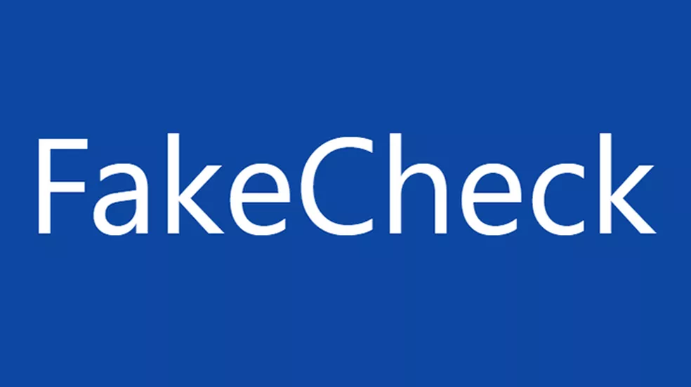

O detector de Fake News Fake Check é uma plataforma que foi criada pela junção de pesquisadores da Universidade de São Paulo (USP) e da Universidade Federal de São Carlos (UFSCar). Diferentemente de uma agência, a plataforma utiliza aprendizagem de máquina e inteligência artificial para avaliar se um texto é verdadeiro ou falso.
Para entrar em contato com o Fake Check, basta apenas enviar uma mensagem para o bot do WhatsApp através do número (16) 98112-8986.
